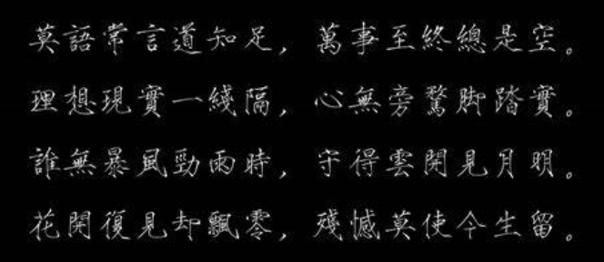

嘿嘿，反正没人看，写点自己的想法
2020是个充满了故事的一年，在今年读了博士，等未来回头看，这一年必然是我人生中重要的一个节点。当然期待博士期间是改变命运的机会是不行的，那就失去了其本身的意义了，尽管在一定意义上来说确实可以改变未来。对我来说，未来4年的博士生活是一个增加个人知识储备与修身的过程，而且由于是在学校，还可以犯错误，未来可就没有这么低成本的试错机会了。
今年的年底我又再次体验了难受的期末复习期，每当这个时候就会后悔为什么平时没有好好学习，为什么到了deadline的时候要火急火燎的赶工？我也想哪怕到了deadline的时候也可以想出去玩就出去玩，但一直以来的拖延症导致我始终没有太大的改变。这需要改变，不能总是出现了不好的结果才开始补救，不能因为我一直命好就可以一直这么放肆下去了。这意味这今后要把工作做在前边，这样等deadline才能游刃有余。希望我能改掉这个毛病，这也是我希望读博期间最大的改变。
对此我认为这是一个修身，或者说是修炼的过程。曾国藩可以视作一个榜样（个人修身方法，其他方面不甚了解，不敢轻言），此外我打算看一下《曾国藩家书》《查拉图斯特拉如是说》《约翰·克里斯朵夫》，这三本书一本我有，另外两本从图书馆借到了，每天抽点时间读一读。
个人生活方法，下学期开始就要勒紧裤腰带过活了，尽管生活其实也没到这地步，但是毕竟是少了许多，这算是随时对自己犯下的错误的提醒吧，随时提醒自己因为自己的错误所付出的代价。钱这东西虽然现阶段对我来说只是够用就行，但谁会嫌少呢是吧？
此外2021年希望能去爬一次武夷山，等夏天吧，等我有了第一篇文章就去
博士期间希望能培养一个个人爱好，画画、历史、吉他我都感兴趣，但肯定是无法都做的，没那么多精力，当然如果我能做好个人时间管理可以一试，吉他等有一大笔进账再说，想买个雅马哈的静音吉他，这个可以往后稍稍。练练字，修身。
博客算是正式完成了，之前一直没有好好配置，现在这样基本上能用了，管它好不好看，反正我自己看，其实这很矛盾，如果我只是想找一个说话的地方，完全可以写在日记里。朋友圈我不太看也不发，想把有些内容发在网络上，但又不想让别人看到，很矛盾，所以姑且用这个来写吧，把搜索关了，通过搜索引擎也找不到我，嘿嘿。
概率论没学好，那就学好它，以前写的内容太啰嗦了，接下来下学期把那本书吃透。此外把数理统计以及多元统计也学学，我感觉会对我以后的科研很有帮助。除此之外，有一门《图论与additive组合》有网课，我打算把这个好好学一下。除此之外，每个月读过的论文总结也发在这上面吧，内容多了还是很有成就感的。
2020目标
- 爬一次武夷山
- 跑完全程马拉松（时间不限）
- 发两篇论文（两篇是不是有点急于求成了）
- 体重减到150
- 戒躁
